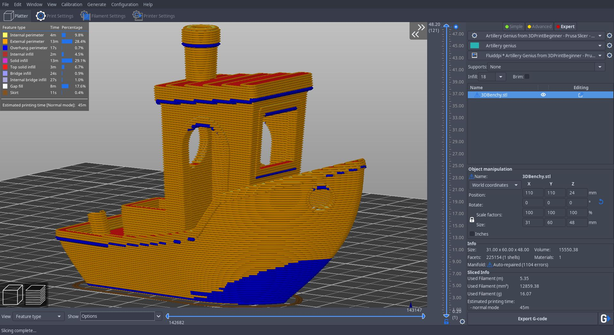

Ce document a été réalisé par CARDOT Yannis
La naissance de l'impression 3d pour particulier est apparu avec le projet RepRap (contraction de l'anglais Replication Rapid prototyper, qui peut se traduire par concepteur de réplication rapide). Ce projet vise à créer une imprimante 3D en grande partie autoréplicative et libre/open-source (c'est-à-dire sans brevet, et dont les plans sont disponibles pour tout le monde). RepRap désigne également les imprimantes 3D réalisées par le projet RepRap. Ce projet/machines réelles est maintenant développé très activement par une communauté mondiale, à la manière du logiciel libre. Par « auto-réplication » il ne faut pas entendre que la RepRap pourrait s'auto-répliquer, même en partie, de manière autonome, mais qu'elle peut imprimer une partie des pièces la constituant : on peut avec elle fabriquer une partie des pièces d'autres RepRaps. L'électronique de contrôle, les moteurs, l'informatique, etc., ne se reproduisent pas, actuellement.
La modélisation 3d consiste à créer une pièce sur ordinateur à partir d'une idée ou même d'un plan avec des contraintes. En impression 3d, on peut utiliser de la modélisation paramétrique (CAO), c'est-à-dire que si par exemple on modélise un pièce on pourra après coup remodifier n'importe quelle dimension de cette pièce. Pour ce genre de modélisation il y a de nombreux logiciels comme Solidworks, inventor (les 2 payants), Freecad (gratuit et open-source)etc... On peut aussi modéliser d'une manière "plus libre" sans tenir compte des contraites (dimensions par exemple) avec des logiciels qui sont plus axés vers une modélisation naturelle tel de la sculpture. Il y a par exemple Zbrush ou Blender.
Le slicer, aussi appelé logiciel de tranchage, joue le rôle d’intermédiaire entre le modèle 3D et l’imprimante 3D. Une fois que vous avez modélisé l’objet que vous souhaitez imprimer, vous l’obtenez sous la forme d’un fichier STL. Le slicer 3D permet de convertir le modèle en une série de couches fines et génère un fichier G-code, contenant toutes les instructions pour l’imprimante 3D utilisée. En d’autres termes le slicer vient diviser l’objet en une pile de couches (il tranche l’objet) et indique à l’imprimante les mouvements que la tête d'impression doit faire. On peut également grâce à ce logiciel prévoir le temps d'impression, la quantité de plastique utilisé et régler différents paramètres afin de pouvoir imprimer rapidement ou avec une bonne qualitée.
Pour bien se représenter la manière de fonctionnement d'une imprimante 3d on peut regarder un timelapse. Cela consiste à prendre une photo à chaque couche puis à les condenser en une vidéo.